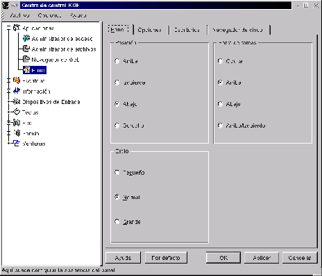

Next: Panel
Up: Configuración del entorno KDE
Previous: Barra de título
Índice General
Esta herramienta tiene la función de permitir acceder a los programas
instalados de una manera fácil y relativamente rápida. La barra de
herramientas (de ahora en más se la llamará Panel) además de tener el
botón de menú  , puede utilizarse para situar botones
personalizados en él, además de albergar las aplicaciones
``encajadas'' como ser el reloj cuya vista aparece directamente en el Panel.
, puede utilizarse para situar botones
personalizados en él, además de albergar las aplicaciones
``encajadas'' como ser el reloj cuya vista aparece directamente en el Panel.
Además de esto, el panel posee los botones de acceso a los diferentes
escritorios, los cuales además pueden ser accedidos de la forma que se
explicó en la sección 3.2.4.
Figura 3.17:
Configuración del Panel
|

|
Como puede verse en la figura 3.17 existen varias opciones de configuración, que se irán tratando una a una:
Subsecciones
Proyecto Cursos - LuCAS - http://lucas.hispalinux.es/htmls/cursos.html